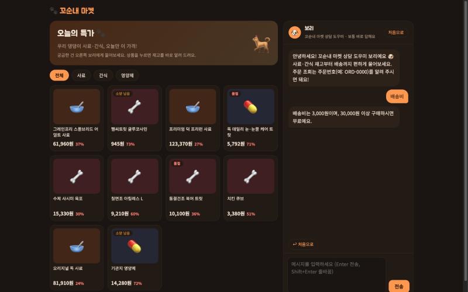
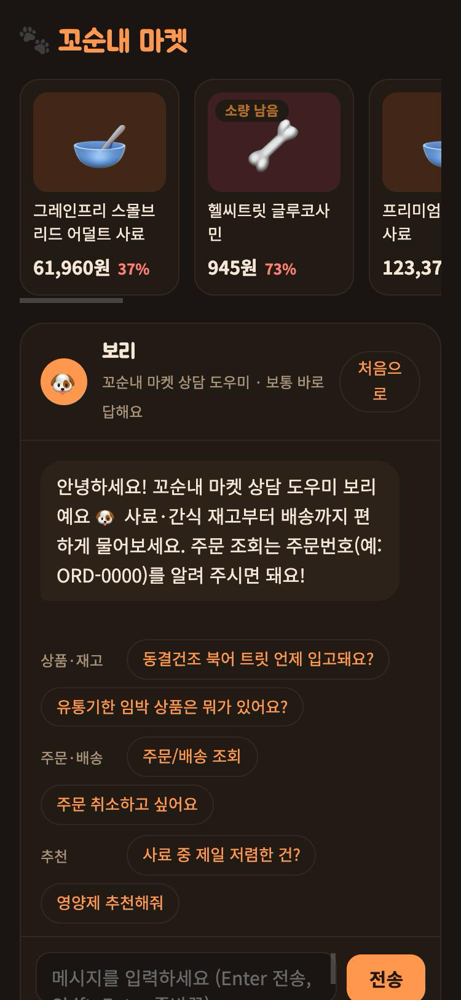
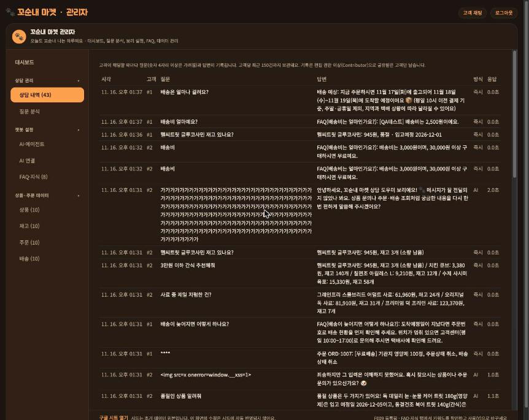

1. 테스트 케이스 (TC)
| TC ID | 영역 | 구분 | 시나리오 | 테스트 절차 | 기대 결과 | 실제 결과 | 결과 | 심각도 | 결함 |
|---|
2. 결과 보고서
영역 × 구분별 결과
PassFail미실행
총평
테스트 범위·환경
- 대상: 고객 화면(
#chat), 관리자 화면(#admin) - 환경: 로컬 서버
localhost:3000+ 실제 Firebase(Firestore, Authentication) - 브라우저: Chrome(관리자, 사용자 Google 로그인), 앱 내장 브라우저(고객), 화면폭 PC 1440 · 모바일 375
- 방법: 화면 조작과 스크립트로 입력·응답·저장값(Firestore)을 직접 비교
- 데이터: 가상 샘플(상품·재고·주문·배송 각 10건, FAQ 8건). 수정한 값은 모두 원복
- 제외: AI 연결 테스트 버튼·키 저장·샘플 되돌리기·다른 Google 계정·주문/배송 편집 반영·피드백 지침의 실제 AI 적용 (TC 결과 '미실행')
테스트 중 확인한 점
- 규칙 답변(FAQ·재고·주문조회·추천)은 평균 0초대로 즉시 응답, AI 응답은 약 1~2초(5건 평균 1.8초)
- 관리자 수정은 새로고침 없이 고객 화면에 실시간 반영
- 대시보드 KPI(주문 수·매출·배송중·품절/소량·즉시응답률·AI 평균)는 Firestore 원본 값과 일치
- 비로그인 상태에서 데이터 수정·상담 목록 조회는 차단, 단 주문 데이터 읽기는 열려 있음(결함 D-01)
- 피드백 → AI 지침: 반영을 켜면 프롬프트에 [관리자 피드백 지침]이 붙고, 끄거나 삭제하면 사라짐. 고객 화면은 반영된 항목만 읽을 수 있음
- 테스트용 상담 기록이 Firestore에 남아 있음(관리자 상담 내역에 표시)
화면 캡처


